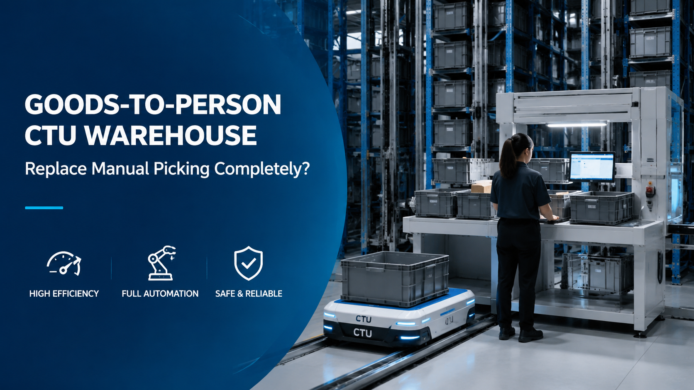

Goods-to-Person CTU Warehouse: Replace Manual Picking Completely?
Goods-to-Person (GTP) CTU (Case Transfer Unit) systems represent one of the most advanced forms of warehouse automation, designed to fundamentally eliminate manual walking, searching, and picking inefficiencies. Instead of operators moving through warehouse aisles, robots automatically deliver goods directly to the picking station, enabling a highly efficient, ergonomic, and scalable fulfillment model. This case demonstrates how a CTU-based automation system improves picking efficiency, labor safety, and operational stability, especially in high-SKU, high-throughput environments.

Summary
Goods-to-Person (GTP) CTU (Case Transfer Unit) systems represent one of the most advanced forms of warehouse automation, designed to fundamentally eliminate manual walking, searching, and picking inefficiencies.
Instead of operators moving through warehouse aisles, robots automatically deliver goods directly to the picking station, enabling a highly efficient, ergonomic, and scalable fulfillment model.
This case demonstrates how a CTU-based automation system improves picking efficiency, labor safety, and operational stability, especially in high-SKU, high-throughput environments.
Technology
- The CTU Goods-to-Person system typically integrates:
- CTU robotic shuttle system (Case Transfer Units)
- Automated storage rack system (high-density shelving)
- Picking workstation (ergonomic operator station)
- WMS (Warehouse Management System)
- WCS (Warehouse Control System)
- SCADA real-time monitoring system
- Conveyor or buffer transfer system
- Barcode/RFID scanning system
- Safety sensors and collision avoidance modules
- Intelligent task scheduling algorithm
Challenge
Traditional manual picking warehouses face several structural limitations:
Workers must walk long distances between shelves
High labor intensity and fatigue
Picking errors due to human handling
Inefficient SKU location searching
Limited scalability during peak demand
High labor dependency and turnover risk
These problems result in:
Low picking efficiency
High operational cost
Inconsistent order accuracy
Solution
The CTU Goods-to-Person system eliminates manual travel by reversing the fulfillment logic:
Instead of:
👉 worker → product
The system becomes:
👉 product → worker
Robots retrieve storage bins or cases and deliver them directly to the picking station, enabling:
✔ faster picking
✔ reduced labor strain
✔ higher accuracy
✔ stable throughput
Workflow & Layout
Step 1: Order Generation
Orders are received via e-commerce or ERP systems
WMS breaks down order lines into picking tasks
Step 2: Task Allocation
WCS assigns tasks to CTU robots
Optimal pathing and priority scheduling applied
Step 3: CTU Retrieval Operation
CTU robots move through storage racks
Identify required SKU locations
Extract bins or cases automatically
Step 4: Goods-to-Person Delivery
Robots transport goods directly to picking station
Items are presented in ergonomic operator position
Step 5: Operator Picking Process
Operator scans barcode/RFID
Picks required quantity
System confirms accuracy in real-time
Step 6: Return & Replenishment
CTU returns storage unit to rack
System updates inventory automatically
Results & ROI
- 1️⃣ Picking Efficiency Improvement
- 200%–400% increase in picking speed
- Reduced walking time to near zero
- Continuous high-speed fulfillment capability
- 2️⃣ Labor Risk Reduction
- No long-distance walking required
- Reduced physical fatigue
- Lower injury risk in warehouse operations
- 3️⃣ Operational Stability
- Standardized robotic workflow
- Reduced dependency on worker skill levels
- Stable performance during peak seasons
- 4️⃣ Accuracy Improvement
- Barcode/RFID verification at every step
- Reduced human picking errors
- Improved order fulfillment accuracy
- 5️⃣ ROI Impact
- CTU systems typically achieve:
- 👉 18–36 months payback period depending on scale and SKU complexity
Equipment List
- Core Hardware:
- CTU robotic shuttle units
- High-density storage racks
- Picking workstations
- Conveyor/buffer systems
- Software Systems:
- WMS warehouse management system
- WCS control system
- SCADA monitoring platform
- Order management integration system
- Safety & Control Systems:
- Light curtain safety systems
- Collision avoidance sensors
- Emergency stop modules
- System diagnostics monitoring
Project Overview / Opening
Goods-to-Person CTU systems redefine warehouse picking by eliminating manual walking entirely.
Instead of humans searching for goods, intelligent robots bring goods directly to operators, fundamentally changing warehouse efficiency, ergonomics, and scalability.
This system is widely used in e-commerce, retail distribution, pharmaceutical fulfillment, and high-SKU logistics environments.
Key Points
- 1️⃣ Manual Picking Replacement
- CTU systems completely remove:
- Walking between aisles
- Manual SKU searching
- Physical transport burden
- 2️⃣ Robot-to-Person Logistics Logic
- Core transformation:
- 👉 Goods move to operators, not operators to goods
- 3️⃣ Efficiency vs Manual Operation
- CTU systems provide:
- Faster throughput
- Lower labor intensity
- Higher system consistency
- 4️⃣ High SKU Handling Capability
- System is optimized for:
- Large SKU variety
- Fast order segmentation
- Dynamic storage management
- 5️⃣ Scalability Advantage
- CTU systems scale by:
- Adding more robots
- Expanding rack density
- Increasing workstations
Implementation / Workflow
Phase 1: Operational Analysis (2–3 weeks)
SKU structure analysis
Order flow evaluation
Phase 2: System Design (2–4 weeks)
Layout planning
CTU routing strategy
Phase 3: Engineering Integration (4–8 weeks)
Hardware installation
Software integration (WMS/WCS/SCADA)
Phase 4: Deployment (2–4 weeks)
System calibration
Functional testing
Phase 5: Optimization (1–2 weeks)
Performance tuning
Throughput balancing
Customer Value / Results
Operational Value:
Fully automated picking workflow
Higher throughput capacity
Reduced labor dependency
Safety Value:
Reduced worker movement risk
Lower fatigue-related incidents
Improved ergonomic working conditions
Financial Value:
Lower long-term labor cost
Improved order accuracy reduces returns
Strong ROI within 18–36 months
Conclusion / Next Step
CTU Goods-to-Person systems represent a fundamental shift in warehouse logistics—from manual picking to fully robotic fulfillment.
They provide:
✓ Complete elimination of manual walking
✓ High-speed order fulfillment
✓ Scalable warehouse architecture
✓ Strong ROI and operational stability
For high-SKU and high-throughput operations, CTU automation is not just an upgrade—it is a core competitive advantage in modern logistics.
If you are planning a warehouse automation project, we can design a CTU-based Goods-to-Person system tailored to your SKU structure, order volume, and operational goals.
SEO Title
Goods-to-Person CTU Warehouse: Replace Manual Picking Completely?
SEO Description
Goods-to-Person (GTP) CTU (Case Transfer Unit) systems represent one of the most advanced forms of warehouse automation, designed to fundamentally eliminate manual walking, searching, and picking inefficiencies.
Instead of operators moving through warehouse aisles, robots automatically deliver goods directly to the picking station, enabling a highly efficient, ergonomic, and scalable fulfillment model.
This case demonstrates how a CTU-based automation system improves picking efficiency, labor safety, and operational stability, especially in high-SKU, high-throughput environments.
Related Blog
Start with Your Business Challenge
Tell us about your warehouse, factory, or production requirements. We'll help you explore practical automation solutions and relevant project references.